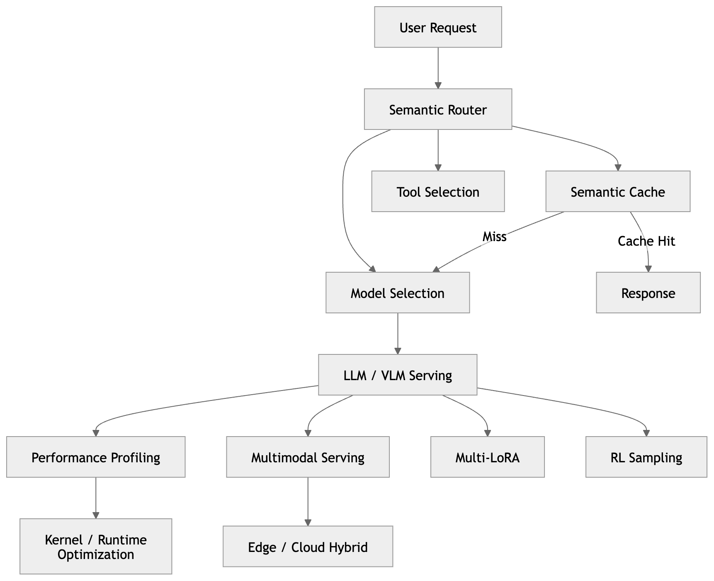
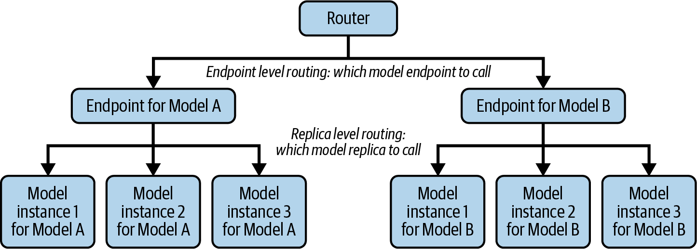
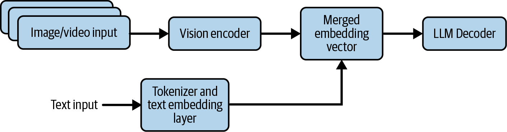
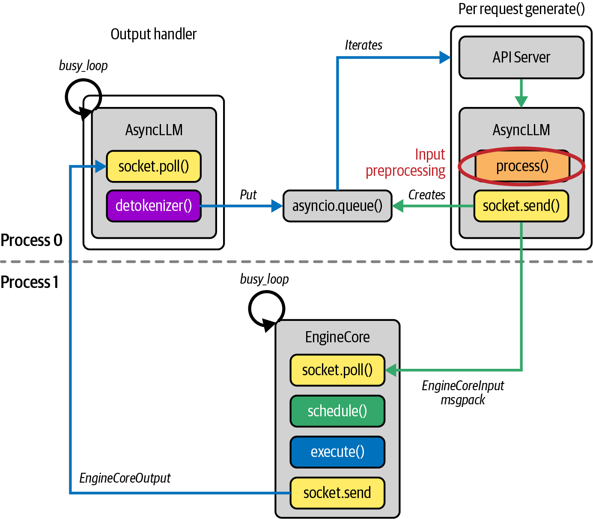
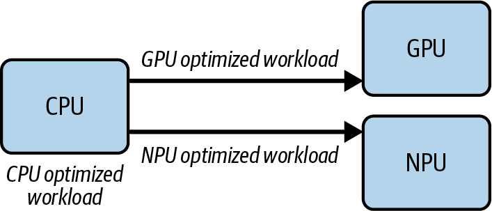
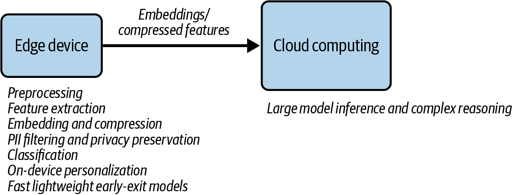
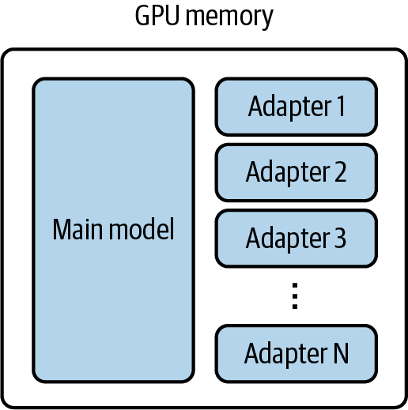
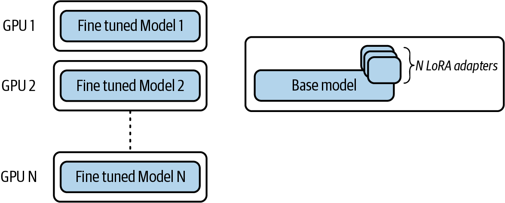
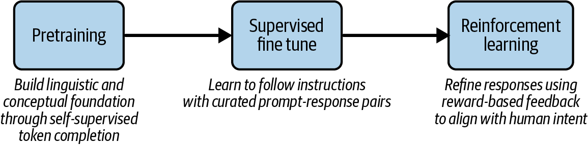
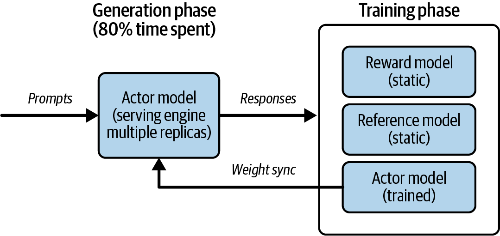

목차 펼치기
시작하며: 6가지 최신 트렌드
이 챕터는 책의 마무리 장으로, 지금까지 배운 LLM 서빙 기초를 바탕으로 최신 트렌드 6가지를 소개합니다. 원문은 스스로 "깊이 있는 완결된 내용이라기보다, 빠르게 발전하는 분야에 대한 '다음 학습 방향' 안내서 성격이 강합니다"라고 성격을 규정합니다.
📌 핵심 요약(원문 그대로): "LLM Serving은 더 이상 '하나의 모델을 빠르게 실행하는 시스템'이 아니라, 요청의 의미를 이해하고 적절한 모델·도구·하드웨어·실행 위치를 선택하는 지능형 inference system으로 발전하고 있다."
지금까지의 서빙 엔진이 "정해진 메뉴 하나를 최대한 빨리 만드는 주방"이었다면, 이 챕터가 그리는 서빙 엔진은 "손님의 취향을 파악해 어떤 셰프·도구·주방을 쓸지까지 결정하는 지배인"에 가깝습니다.

- 요청을 의미적으로 분류·캐싱하는 시맨틱 캐싱/라우팅
- 성능 병목을 찾는 프로파일링 기법
- 텍스트를 넘어 이미지 등 멀티모달을 다루는 VLM 서빙
- 클라우드가 아닌 디바이스 단에서 실행하는 엣지 서빙
- 여러 개의 LoRA 어댑터를 동시에 효율적으로 서빙하는 Multi-LoRA
- 강화학습 파이프라인에서 추론 엔진이 담당하는 역할
1. Semantic Caching / Semantic Routing
기존의 정확 일치(exact match) 기반 프롬프트 캐싱/라우팅과 달리, 임베딩 + 벡터 검색으로 "의미"가 같은 요청을 인식해 처리합니다.
"비행시간 얼마나 걸려?"와 "몇 시간 걸리는지 알려줘"를 매번 새 질문으로 취급하지 않고 같은 질문으로 알아채는, 노련한 상담원과 같습니다. 다만 이 상담원도 "머릿속 매뉴얼"을 찾아보는 데는(임베딩 계산·벡터 검색) 약간의 비용이 듭니다 — 거대 LLM을 다시 호출하는 비용만 피할 뿐, 완전히 공짜는 아닙니다.
시맨틱 라우팅을 쓰는 4가지 이유(원문):
- 캐시 히트 증가: 표현은 다르지만 의미가 같은 질문에 LLM 재호출 없이 캐시된 답변 반환 → 비용·지연시간 절감
- 모델/추론 선택 최적화: 경량 인코더(예: ModernBERT)로 프롬프트 복잡도를 판단해, 간단한 질문엔 소형 모델, 복잡한 질문엔 고급 모델+추론 기능 선택
- SLM으로의 라우팅: 8B~32B 규모의 작업 특화 SLM이 거대 범용 LLM과 대등하거나 더 나은 성능·지연시간을 제공하는 경우가 많아, 라우터가 쿼리에 맞는 최적 모델 엔드포인트로 분배
- 에이전틱 도구 필터링 및 정책 집행: MCP 기반으로 등록된 전체 도구 중 관련 도구만 선별해 모델에 전달, 보안/정책/컴플라이언스 검사의 중앙 집행점 역할

🧪 5단계 시맨틱 라우팅 파이프라인 체험
flowchart TD
U["사용자 원본 프롬프트"] --> S1["1. PII 마스킹"]
S1 --> S2["2. 임베딩 생성"]
S2 --> S3["3. 벡터 검색 (Semantic Cache)"]
S3 --> C1{"유사 캐시 존재?"}
C1 -->|Hit| OUT["캐시된 응답 즉시 반환"]
C1 -->|Miss| S4["4. 도구 필터링 (100개→5개)"]
S4 --> S5["5. 분류기 기반 모델 라우팅"]
S5 --> M1["소형 내부 모델"]
S5 --> M2["도메인 파인튜닝 모델"]
S5 --> M3["외부 최첨단 Reasoning LLM"]
① PII 마스킹: NER 기반 소형 인코더 + 정규식으로 이름·이메일 등을 탐지해 <NAME_1>, <EMAIL_1> 등으로 치환합니다.
② 임베딩 생성 + 벡터 검색: 프롬프트를 예를 들어 길이 768의 임베딩 벡터로 변환합니다. Semantic Cache가 Prefix Cache보다 넓은 이유는 "문장은 달라도 의미가 비슷하면 재사용 가능"하기 때문입니다 — Prefix Cache는 문자열/토큰 패턴 중심인 반면 Semantic Cache는 의미 중심입니다.
③ 도구 필터링: 에이전트가 쓸 수 있는 도구가 100개일 때 모든 스키마를 LLM에 보내면 Prompt Token↑·Latency↑·오작동 위험↑이 발생합니다. 시맨틱 라우터가 벡터 검색으로 관련 도구만(예: 100개→5개) 추려 전달합니다.
④ 모델 선택(분류기): 임베딩을 입력으로 하는 소형 분류기가 소형/도메인/대형 모델 중 어디로 보낼지 결정합니다.
vLLM Semantic Router & LiteLLM
vLLM Semantic Router[1]는 Candle 프레임워크 기반 Rust Core로 고성능 분류를 수행하고, ModernBERT를 의도 분류용으로 파인튜닝하며, Envoy(ExtProc) 인터페이스에 연결해 클라우드 네이티브 프록시로 동작합니다.
LiteLLM[2]은 "AI Gateway for platform teams" — 다양한 LLM 제공사(OpenAI, Anthropic, Bedrock 등, 원문 기준 100개 이상) API를 하나의 통일된 인터페이스로 호출합니다. 요청 생명주기는 가상 키 검증 → 속도 제한(RPM/TPM) → proxy_server.py → 라우터(Fallback/Retry/LB) → SDK 호출 → 비동기 로깅 7단계로 이뤄집니다. 이미지 URL을 지원하지 않는 API를 위해 자동으로 base64 변환하며, 최대 10개의 변환 이미지를 메모리에 캐시하고 개별 다운로드는 기본 50MB로 제한합니다(MAX_IMAGE_URL_DOWNLOAD_SIZE_MB).
ℹ️ 최신성 참고: 원문은 "100개 이상 제공사"라고 표기하지만, 조사 시점 기준 LiteLLM 공식 홈페이지는 "140개 이상 제공사"를 지원한다고 밝히고 있습니다. 이런 숫자는 계속 늘어나므로 실제 배포 시에는 설치된 버전의 공식 문서를 다시 확인하는 것이 좋습니다.
라우팅 전략은 Weighted Pick(기본/권장), Rate Limit Aware, Least Busy, Latency Based, Cost Based 5가지입니다. 기존 Semantic Auto Router는 utterances/score_threshold 방식으로 동작했으나 원문 시점에 Deprecated 상태이며, 시맨틱 키워드 매칭·복잡도 점수·적응형 라우팅을 통합한 [Beta] Auto Routing(auto_router/complexity_router)으로 대체 안내되고 있습니다. 이 문서 작성 시점에도 LiteLLM 공식 문서에 동일한 안내가 게재되어 있음을 확인했습니다.
도전과제(원문 그대로 인용):
- "Client → vLLM Semantic Router → vLLM x 2대(프로세스 or 파드) 환경에서 라우팅, Failover, Semantic Routing + 모니터링 구성해보기"
- "LiteLLM Getting Started 설치 및 사용 해보기"
- "Client → LiteLLM GW/Proxy → vLLM x 2대(프로세스 or 파드) 환경에서 마스킹, 라우팅, Failover, Auto Routing + 모니터링 구성해보기"
2. Performance Profiling Strategies
LLM 서빙은 비용이 많이 들기 때문에 워크로드 프로파일링의 중요성이 큽니다. "대규모 서빙에서는 단 1퍼센트포인트의 개선만으로도 수백만 달러의 인프라 비용을 절감할 수 있다"는 것이 핵심 메시지입니다. (이 책은 커스텀 CUDA/Triton 커널 작성법 자체는 다루지 않습니다.)
1단계로 체온·혈압 등 전신 상태(서빙 레이어)를 측정하고, 이상 발견 시 2단계로 엑스레이·혈액 검사(PyTorch Profiler)로 어느 장기(연산자)가 문제인지 찾으며, 마지막 3단계로 조직 검사(Nsight Compute)를 통해 세포 단위(CUDA 커널) 원인을 규명하는 것과 같습니다.
3단계 레이어 구조
- 서빙 레이어: TPS, TTFT, ITL, GPU/메모리 활용률 등 상위 지표 관찰
- 프레임워크 레이어(PyTorch Profiler[3]): matmul·attention·layernorm 등 오퍼레이터별 실행 시간, CPU-GPU 데이터 이동 분석. CPU 모드는 호스트측 병목, CUDA 모드는 GPU 시간 지배 오퍼레이터를 확인
- 런타임 레이어(Nsight Systems → Nsight Compute): Nsight Systems는 시스템 전체 타임라인·GPU 유휴 구간을, Nsight Compute는 단일 커널의 점유율·메모리 스톨을 분석
🧪 프로파일링 의사결정 트리 체험
flowchart TD
NS["Nsight Systems (시스템 전체 타임라인)"] --> GPU{"GPU 활용률 낮음?"}
GPU -->|Yes| CPUM["PyTorch Profiler (CPU 모드)
호스트 측 병목 확인"]
GPU -->|"No, GPU는 바쁜데 지연시간 높음"| CUDAM["PyTorch Profiler (CUDA 모드)
지배적 오퍼레이터 확인"]
CUDAM --> ONE{"단일 커널이 지배적?"}
ONE -->|Yes| NC["Nsight Compute로 미세 분석
튜닝/교체/퓨전"]
ONE -->|No| RECHECK["launch 오버헤드/오버랩 부재/동기화 문제
Nsight Systems로 재점검"]
도전과제(원문 그대로 인용): "vLLM 벤치마크 실행 시, 'NVIDIA Nsight Systems/Compute'와 PyTorch Profiler(CPU/CUDA mode)로 프로파일링 후 분석해보기"
3. Multimodal Serving
이 챕터는 멀티모달 입력(이미지/비디오/오디오) → 텍스트 출력(자기회귀 디코더) 모델만 다룹니다. Midjourney, Sora, Veo처럼 멀티모달 출력을 생성하는(확산 모델 기반) 모델은 명시적으로 범위 밖입니다.[6][7]
이미지는 프롬프트 내에서 <|vision_start|>...<|image_pad|>...<|vision_end|> 형태의 플레이스홀더 토큰으로 표현됩니다. 실제 토큰 ID 예시에서는 151655가 644회 반복되어 이미지 임베딩 자리를 채웁니다. Vision Encoder가 이미지를 패치 단위로 분할하고 LLM 히든 차원으로 투영(projection)한 뒤, 텍스트 임베딩과 결합된 단일 시퀀스로 Transformer에 입력합니다.

시스템 병목의 이동 (Bottleneck Shifting)
텍스트 토크나이징은 가볍지만, 이미지 전처리(디코딩→리사이즈→크롭→색공간 변환→정규화)는 CPU 집약적입니다. 이 작업이 LLM 실행 전에 완료돼야 하므로, 요청률이 높아지면 CPU가 포화되어 GPU가 유휴 상태가 됩니다 — 병목이 GPU에서 CPU 전처리 단계로 이동합니다.
아주 빠른 주방장(GPU)이 있어도, 재료를 손질하는 보조 조리사(CPU)가 느리면 요리를 시작조차 못 합니다.
vLLM V0 → V1 해결책
- V0: 멀티모달 전처리 + API 서버 오버헤드가 CPU를 블로킹 → GPU 유휴 시간 발생
- V1: Process 0(API 서버 + 입력 전처리 + 출력 후처리)과 Process 1(GPU 커널 스케줄링/실행 전담)을 완전히 분리, 두 프로세스가 비동기적으로 동시 실행

ℹ️ 외부 검증 보강: 원문은 이 개선을 "처리량이 상당히 향상됩니다"라고 정성적으로만 서술하며 구체적 수치는 제시하지 않습니다. 별도로 확인한 vLLM 공식 블로그(2025-01-27)는 V1이 V0 대비 최대 1.7배 높은 처리량을 달성하며 이 개선이 VLM에서 더 두드러진다고 밝혔고, Red Hat Developer 블로그(2025-04-28)는 생성 위주 워크로드에서 최대 24% 처리량 향상을 별도로 보고했습니다. 이 수치들은 원문 텍스트에는 없는 외부 공식 자료 기반 보강입니다.
도전과제(원문 표기 그대로): "vLLM 에 Multi-Model 서빙 실습 해보기"
4. Edge AI: Drivers and Enablers
3대 동인 (Drivers)
- 지연시간: 로보틱스/자율주행/AR-VR 등에서 클라우드 왕복 20~50ms조차 허용 불가
- 데이터 로컬리티: 의료·금융 등 민감 데이터를 로컬 처리해 GDPR/HIPAA 규제 준수
- 비용: IoT 센서/고해상도 카메라의 대용량 데이터를 로컬 필터링 후 요약 정보만 클라우드 전송
5대 인에이블러 (Enablers)
- 저전력 특화 하드웨어: NPU 등, TOPS/W(와트당 초당 테라연산)가 핵심 지표
- 모델 압축/최적화: 양자화·프루닝·증류 + KV캐싱·스펙큘레이티브 디코딩
- 이기종 컴퓨트(Heterogeneous Compute): CPU가 워크로드 특성에 따라 GPU에 적합한 작업과 NPU에 적합한 작업으로 분기해서 배분(고정된 순차 파이프라인이 아님)
- 열 인지 스케줄링: 팬리스 디바이스는 발열이 곧 스로틀링으로 직결 → 온도 기반 소형 모델 전환/프레임레이트 감소
- 엣지-클라우드 하이브리드: 웨이크워드 감지, 경량 전처리는 엣지에서, 무거운 추론은 클라우드에서 — 적응형 오프로딩으로 동적 결정


참고 프레임워크: TensorFlow Lite(모바일/엣지 경량 솔루션), ONNX Runtime(다양한 하드웨어 고성능 실행), ExecuTorch(PyTorch 온디바이스 추론), Apache TVM(하드웨어별 딥러닝 컴파일러).
5. Multi-LoRA Serving
기업의 LLM 도입은 보통 RAG(컨텍스트 주입) → 파인튜닝(더 깊은 정렬) 순서로 진행됩니다. LoRA는 원본 가중치를 동결하고 작은 저랭크 레이어만 학습하는 PEFT 방법으로, 빠르고 저렴하고 모듈화된 파인튜닝을 가능케 합니다.
카메라 바디(베이스 모델)는 한 대만 두고, 인물용/풍경용/야간용 렌즈(LoRA 어댑터)를 상황에 맞게 갈아 끼우는 것과 같습니다. 손님마다 다른 카메라를 10대 살 필요가 없습니다.

활성 어댑터는 모두 GPU 메모리에 상주하며, 서로 다른 어댑터를 쓰는 요청도 연속 배칭으로 함께 처리됩니다. 이를 위해 Punica 논문(arXiv:2310.18547)[4]이 제안한 SGMV(Segmented Gather Matrix-Vector Multiplication) 커널처럼, 베이스 모델 가중치 연산과 여러 어댑터별 델타 연산을 함께 처리한 뒤 결합하는 특화 커널이 쓰입니다.

⚠️ 언제 쓰면 안 되는가: 어댑터별 트래픽이 이미 GPU를 포화시킬 만큼 많다면, 각 어댑터를 베이스 모델에 병합(merge)해 독립적으로 데이터 병렬 확장하는 것이 더 낫습니다. Multi-LoRA는 "어댑터별 트래픽은 낮지만 customization이 많은" 멀티테넌트 환경에 특화된 기법입니다. ("1 GPU로 N개 어댑터"가 항상 가능한 것은 아니며, VRAM 용량과 동시 활성 어댑터 수에 따라 달라집니다.)
6. Model Serving in Reinforcement Learning
LoRA류 PEFT가 지도학습 기반 적응에 초점을 맞추는 반면, RLHF는 인간 선호도를 통합해 응답 방식을 정제합니다(개방형 생성 작업에 특히 유용). LLM 훈련은 Foundation 구축(사전학습) → Instruction Following(지도 파인튜닝) → Human Alignment(강화학습) 순서로 진행됩니다.

OpenRLHF[5](인기 오픈소스 RLHF 프레임워크)는 "RLHF 훈련 시간의 80%가 모델 서빙의 샘플 생성 단계에 사용된다"고 명시합니다. 서빙 엔진(vLLM/SGLang)이 액터 모델(현재 정책)로 프롬프트를 보내 여러 레플리카에서 대량 후보 응답을 생성하면, 보상 모델이 품질 점수를 매기고 참조 모델이 정책 그래디언트 계산을 돕습니다. 액터 모델은 이 그래디언트로 업데이트되고, 새 가중치는 주기적으로 서빙 레플리카에 재동기화됩니다.

⚠ 정정(교차검증 반영): 리서치 초안 중 하나는 OpenRLHF의 추정치를 "전체 시간의 약 70~80%"로 완화해 표기했으나, OpenRLHF 공식 GitHub README는 "80%"라는 단일 수치로 명시합니다("RLHF training spends 80% of the time on sample generation"). 또한 "이 서빙 가속으로 3~4배 이상의 훈련 속도 향상을 달성했다"는 서술은 공식 자료에서 확인되지 않는 근거 미제시 주장이므로 이 문서에는 포함하지 않았습니다.
RL 서빙의 결정론(Determinism) 요구사항
일반 production serving은 fast/cheap/scalable이 중요하지만, RL에서는 Deterministic(결정론적)이 추가로 중요합니다 — 레플리카·실행 간 미세한 비결정성이 일관되지 않은 보상, 불안정한 훈련, 재현 불가능한 결과로 이어질 수 있습니다. Thinking Machines Lab의 "Defeating Nondeterminism in LLM Inference" 연구는 배치 형태(batch-shape) 변화 같은 미묘한 구현 세부사항이 커널의 리덕션(reduction) 순서를 바꿔 작은 편차를 만들고, 이것이 수천 번의 RLHF 반복에 걸쳐 누적될 수 있음을 보여줍니다. 그래서 현대 서빙 엔진은 서빙 성능뿐 아니라 재현 가능한 토큰 출력을 보장하는 배치 불변(batch-invariant) 결정론적 추론에도 초점을 맞춥니다.
⚠ 정정(연도 오류): 리서치 초안 중 하나는 이 연구를 "Horace He 등이 2024년 발표"라고 표기했으나, Thinking Machines Lab은 2025년에 공식 설립된 회사이므로 2024년에 이 회사 명의 블로그가 나올 수 없습니다. 실제로는 2025년(다른 독립 조사에서는 2025-09-10로 특정)에 게시된 글입니다.
같은 레시피로 요리해도 그날 주방에 몇 개의 다른 주문이 함께 들어와 있었는지(배치 크기)에 따라 맛이 미묘하게 달라진다면, 그 요리를 기준 삼아 평가·훈련하는 것 자체가 불가능해집니다. RL 서빙의 결정론은 "몇 명분을 동시에 요리하든 내 그릇의 맛은 항상 똑같아야 한다"는 요구입니다.
Summary
이번 챕터에서는 시맨틱 인지 캐싱과 라우팅, 시스템 수준 및 커널 수준 프로파일링, 멀티모달 추론, 확장 가능한 Multi-LoRA 배포, 강화학습 기반 서빙 아키텍처를 다뤘습니다. 이런 주제들은 이 분야가 순수한 텍스트를 넘어 더 풍부하고, 더 역동적이며, 더 개인화된 경험으로 얼마나 빠르게 확장되고 있는지를 보여줍니다. 하드웨어·모델·모달리티는 계속 변하겠지만, 이 시리즈에서 배운 원리(병목 진단, 트레이드오프 이해, 측정 기반 반복 개선)는 그대로 남을 것입니다.
마무리: 질문과 답
Q1. "병목은 늘 GPU가 아니다" → 병목 이동(bottleneck shifting)을 어떻게 진단하고 대응하는가?
→ 이 챕터에서만 최소 두 가지 사례가 등장합니다. 멀티모달 서빙에서는 이미지 전처리(CPU 집약적)가 포화되면 병목이 GPU에서 CPU로 이동하며, vLLM V1의 프로세스 분리가 그 해결책이었습니다. 진단 도구도 계층적입니다 — 서빙 레이어(TPS/TTFT) 지표에서 이상을 감지하면 Nsight Systems로 시스템 전체 타임라인을 보고, GPU 활용률이 낮으면 PyTorch Profiler CPU 모드로 호스트 병목을, GPU가 바쁜데 지연시간이 높으면 CUDA 모드로 지배적 오퍼레이터를 찾고, 마지막에 단일 커널이 문제면 Nsight Compute로 미세 분석합니다. 즉 "병목이 어디로 이동했는지"는 항상 계층을 하나씩 좁혀가며 진단해야 합니다.
Q2. 최적화 기법을 "적용하지 말아야 할 때"를 판단하는 기준은 무엇인가?
→ Multi-LoRA가 좋은 예시입니다: 어댑터별 트래픽이 이미 GPU를 포화시킬 만큼 크다면, 공유 메모리 경쟁을 만드는 Multi-LoRA 대신 어댑터를 베이스 모델에 병합해 독립 레플리카로 확장하는 것이 낫습니다. 시맨틱 캐싱도 마찬가지로, 캐시 조회(임베딩·벡터 검색) 자체에 비용이 들기 때문에 캐시 히트율이 낮은 워크로드에서는 오히려 오버헤드만 늘어날 수 있습니다. 일반화하면: 어떤 기법이든 "그 기법이 해결하려는 병목이 실제로 존재하는가"를 먼저 확인해야 하며, 그렇지 않다면 기법 자체가 새로운 오버헤드가 됩니다.
Q3. "서빙 엔진"의 역할이 확장되고 있다는 챕터의 메타 메시지는 구체적으로 어떤 근거로 뒷받침되는가?
→ 이 챕터에 등장한 6가지 트렌드 모두가 근거입니다. 서빙 엔진(또는 그 앞단의 게이트웨이)은 이제 ① 요청의 의미를 해석해 모델을 선택하고(시맨틱 라우팅), ② 자기 자신의 성능을 커널 단위까지 관찰하고(프로파일링), ③ 이미지 전처리를 위한 별도 프로세스를 관리하고(멀티모달), ④ 실행 위치를 엣지/클라우드 중 결정하고(엣지 AI), ⑤ 여러 고객사의 커스텀 모델을 하나의 GPU에서 공유시키고(Multi-LoRA), ⑥ 훈련 루프의 샘플 생성기 겸 결정론 보증자 역할(RL 서빙)까지 수행합니다. 단순히 "토큰을 빨리 뱉는 엔진"이었던 역할이 "요청 이해 → 자원 배분 → 실행 위치 결정 → 재현성 보증"까지 아우르는 지능형 오케스트레이션 시스템으로 확장됐다는 것이 이 모든 사례의 공통 근거입니다.
참고 자료
- vLLM Semantic Router (GitHub)
- LiteLLM — Home · Docs · Routing/LB 문서
- PyTorch Profiler 공식 레시피
- Punica: Multi-Tenant LoRA Serving — arXiv:2310.18547
- OpenRLHF (GitHub)
- [임커밋] 시각화로 이해하는 Diffusion 언어 모델 — YouTube
- Diffusion LLM 붐은 오는가 — YouTube